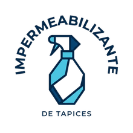
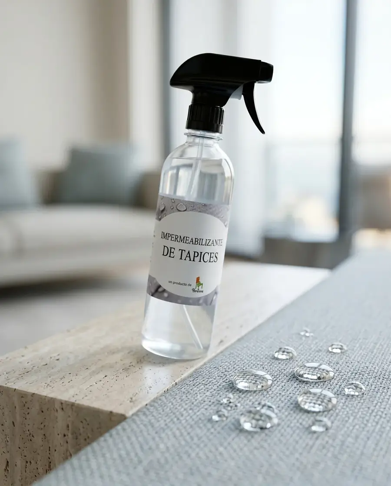
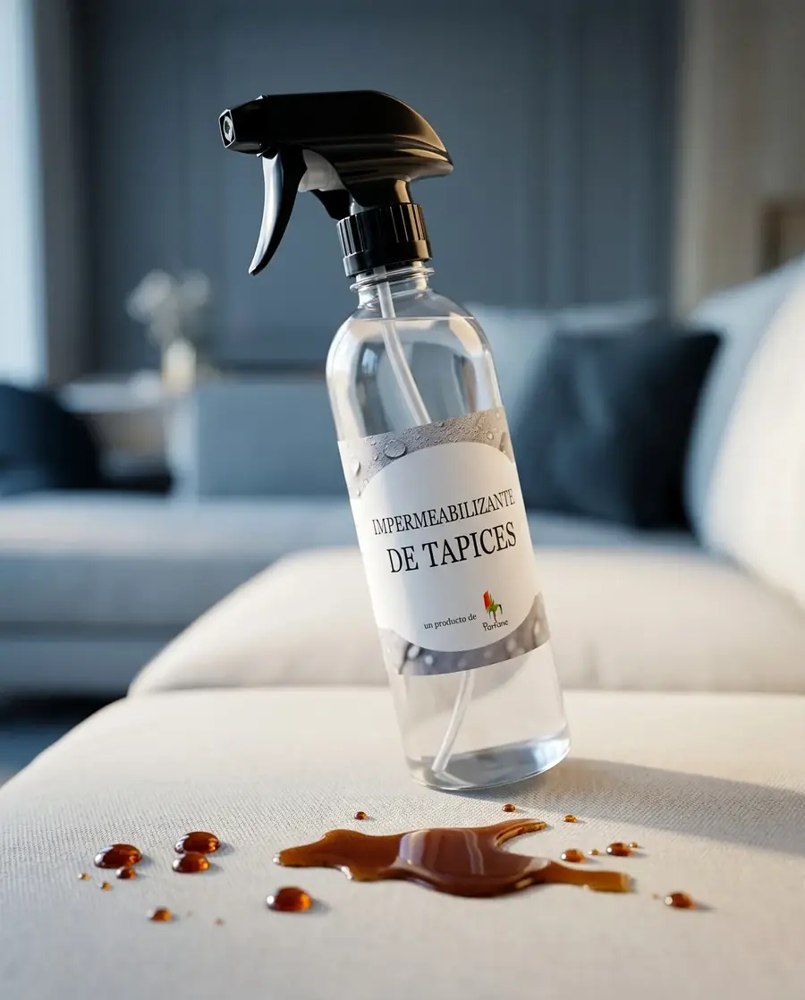

Repele líquidos
Ayuda a que gotas y derrames queden en superficie por más tiempo.

ImpermeabilizanteProtección textil premium
Una barrera invisible que ayuda a repeler líquidos y cuidar tapices, sofás y sillas sin alterar color ni textura.

Vida real en casa
Café, agua, comida, mascotas, niños y visitas pueden dejar marcas difíciles si el líquido alcanza a penetrar la fibra.
La idea no es esperar el accidente. La idea es preparar el tapiz antes.

Qué hace
Ayuda a que los líquidos resbalen antes de penetrar, facilitando la limpieza y manteniendo el aspecto del tapiz.
Ayuda a que gotas y derrames queden en superficie por más tiempo.
Si actúas a tiempo, limpiar puede ser mucho más simple.
Contribuye a proteger contra decoloración por exposición.
Apoya el cuidado de superficies textiles de uso diario.
Una capa extra de cuidado para el hogar y los tapices.
Duración estimada según uso, roce y tipo de superficie.

Sin alterar color ni textura
El acabado es invisible. La diferencia se nota cuando aparece un derrame y el tapiz está preparado.
Consultar si sirve para mi tapiz →Aplicación correcta
Superficie limpia y seca.
Agitar muy bien antes de usar.
Aplicar a 15–20 cm, de lado a lado.
Reforzar asiento, respaldo y brazos.
Aplicar en área ventilada.
Esperar 24 horas antes de usar.

Ideal para
Preguntas frecuentes
Te orientamos por WhatsApp para revisar tipo de tapiz, uso y recomendación de aplicación.
Entre 4 y 6 meses, dependiendo del uso, roce diario y tipo de superficie.
Ayuda a repeler líquidos y también a proteger contra manchas. Si algo queda en superficie, suele ser más fácil de limpiar a tiempo.
Es en base a alcohol, por eso se aplica en área ventilada. El olor se va rápidamente.
Depende de la temperatura ambiente, pero lo ideal es esperar 24 horas antes de usar.
Almacenado en botella es inflamable. Una vez aplicado y seco, ya no tiene ese riesgo.

Compra o cotiza hoy
Atención en V Región y envíos a regiones. Escríbenos y te orientamos.